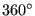

Next: Integrating the stresses in Up: Expansion of the one-dimensional Previous: Applying temperatures and temperature Contents
This is similar to the application of SPC's: if a knot is defined in the node nothing is done for applied translational forces. For moments (which can be considered as rotational forces) their values are applied to the rotational node of the knot, i.e. the node number is changed in the force application.
If no knot is defined in a node in which a force is applied MPC's are generated between the node at stake and the new nodes in the expanded structure in the case of 1D elements and 2D shells. For 2D plane and axisymmetric elements the force is applied to the zero-z node in the expanded structure. If a moment is applied (only applicable to shells and beams) a mean rotation MPC is generated.
For axisymmetric structures the concentrated forces are assumed to apply for the whole . Since the expansion is done for a small sector only (must be small to keep enough accuracy with only one layer of elements, the size of the sector is specified by the user underneath the *SOLID SECTION card) the force is scaled down appropriately.
Application of nodal forces is done in subroutine “gen3dforc.f”.